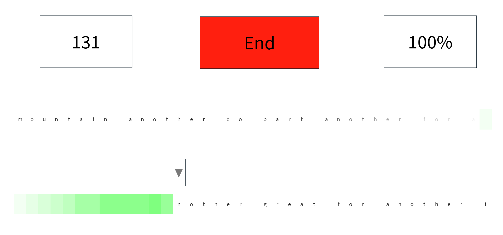

![[Image of UI game on roblox showing typing test in progress.]](../images/goodwpmtest.png)
About:
This was one of my favorite Roblox projects that I created that was an entirely remade version of another version that I did not like as much- it features a settings menu that allows a few customizations, such as ignoring errors or not (change whether or not typing will proceed with an error or present with a red and skip over) along with changing the amount of keys per row or how long the test will be. There is also a possibility to remove outlines on the boxes to keep an aesthetic if wanted. The wpm calculation uses accepted wpm calculating formulas and has a word bank in which it randomly chooses which ones to use next- along with a procedure to ensure it always ends on the end of a word at the end of the line.
![[Image of game settings showing line length, ignore errors, test length, and customizable outlines.]](../images/robloxsettingstype.png)
How it works:
Though made long ago, the project uses a main gui frame for the player client and creates two invisible placeholder keys, then the server generates a bunch of words for the client based on how many letters the user has specified in settings. There is a slight animation while typing allowing for another aesthetic. For the two rows, there is a second set of letters loaded while the player is typing the one on top (which the server accesses from a module script), allowing the letters to change to the new set without the entire thing needing to be 'refreshed' which allows the user to quickly alternate between the top and bottom layer and continiously type. At the end of the test the wpm and details are calculated based on the amount of letters typed and time given. One of the major things addressed in this project was setting the server up in a way taht allows for multiple players to be in the server at the same time. [There is a lot more to this project but I made it so long ago it feels a shame that I can't write about all the things.]
Flaws:
To me this project was near perfection- if I were to continue working on it to attempt to commercialize it better I would attempt to make the UI better, create leaderboards, and increase the wordbank.
Learned:
This project I learned a ton about creating better UIs and systemized approaches to allow for continual cycles. I also made use of module scripts which behave simialarly to libraries in other languages. I also better learned to manage (mainly roblox) client and server communication and allowing for multiple clients.
Used:
- Roblox Studio
- Luau